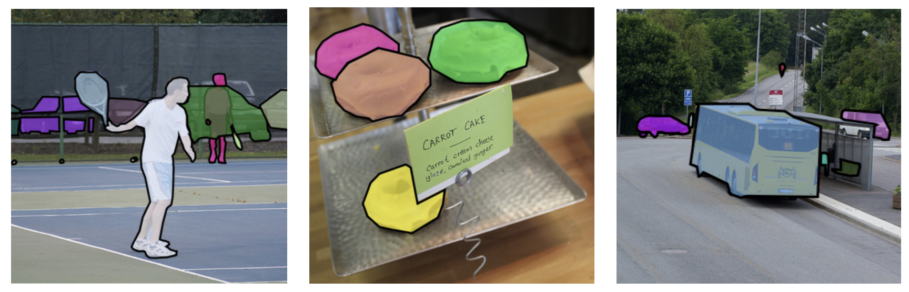
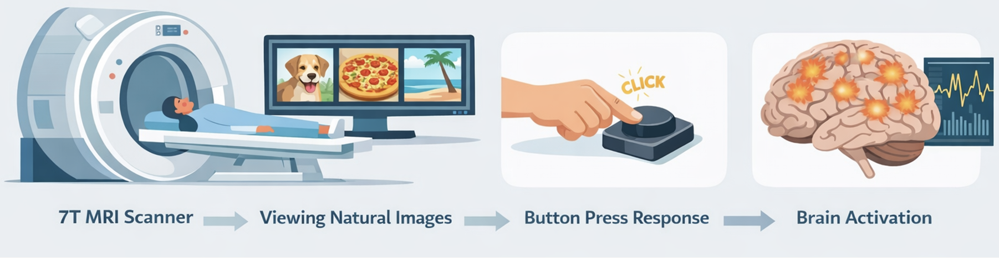
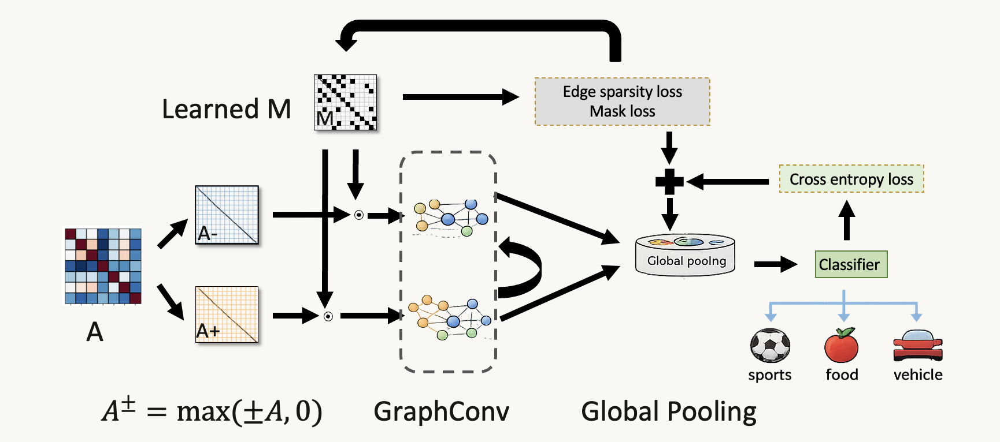
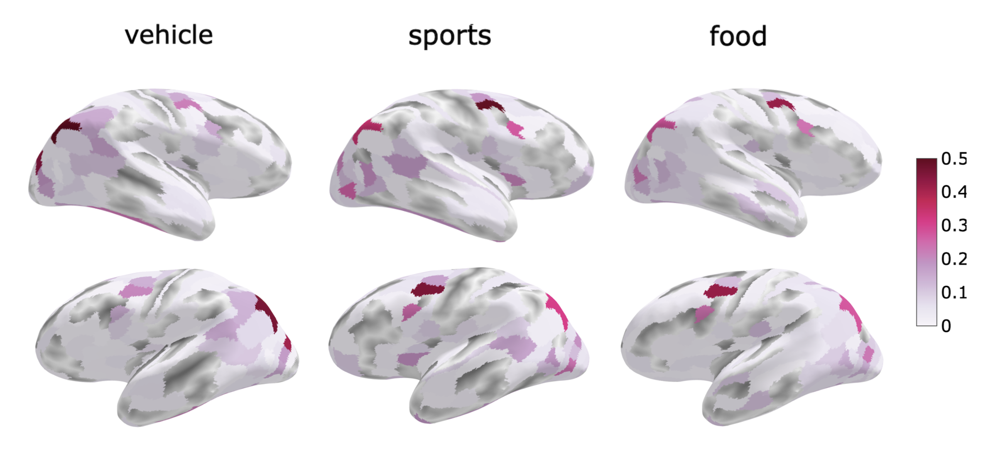

Overview
We study how visual category information is represented in large-scale brain networks during natural image viewing. Using 7T fMRI from the Natural Scenes Dataset, we construct parcel-level connectivity graphs and train an interpretable signed graph neural network to decode three semantic categories: sports, food, and vehicle.
- Multimodal labeling: COCO instance masks and captions are fused into soft category evidence.
- Signed graph modeling: positive and negative connectivity are modeled separately as A+ and A-.
- Explainability: a learned sparse edge mask and class-specific saliency reveal category-selective subnetworks.
Abstract
Understanding how large-scale brain networks represent visual categories is fundamental to linking perception and cortical organization. We introduce an interpretable Signed Graph Neural Network for decoding category-specific functional connectivity during naturalistic vision. The model operates on parcel-level connectivity matrices derived from stimulus-driven fMRI and separately learns from positive and negative interactions. Global interpretability is achieved through a sparsity-regularized edge mask, while class-specific relevance is obtained with gradient-input saliency.
Across subjects, the model accurately decodes sports, food, and vehicle categories and recovers biologically meaningful subnetworks along ventral, dorsal, and limbic pathways.
Dataset and Labeling
The Natural Scenes Dataset provides high-resolution 7T fMRI responses to thousands of natural images. Each image is paired with Microsoft COCO annotations, enabling multimodal category labeling from both object masks and captions.
We fuse semantic and spatial evidence to generate soft labels, then convert these scores into category-balanced training samples.

From fMRI to Signed Graphs
Parcel-wise time series are grouped into blocks, converted into correlation matrices, and split into positive and negative channels. The signed GNN performs masked message passing over these graphs, then aggregates node embeddings for category prediction.


Results
The signed GNN yields strong and consistent decoding across subjects and uncovers distinct category-selective subnetworks: food in ventral and limbic regions, sports in dorsal visuomotor pathways, and vehicles in ventral and lateral occipital cortex.


Key Findings
- Signed GNNs provide an effective and interpretable framework for stimulus-driven functional connectivity.
- Food, sports, and vehicle categories are associated with distinct large-scale subnetworks.
- The learned edge mask captures a global connectivity backbone, while saliency reveals category-specific relevance.
- The framework generalizes across subjects and supports neuroscience interpretation, not just prediction.
BibTeX
@inproceedings{karmi2026signedgnn,
title = {Decoding Functional Networks for Visual Categories via Graph Neural Networks},
author = {Karmi, Shira and Avidan, Galia and Riklin-Raviv, Tammy},
booktitle = {Proceedings of the IEEE International Symposium on Biomedical Imaging (ISBI)},
year = {2026},
url = {https://arxiv.org/abs/2603.28931}
}